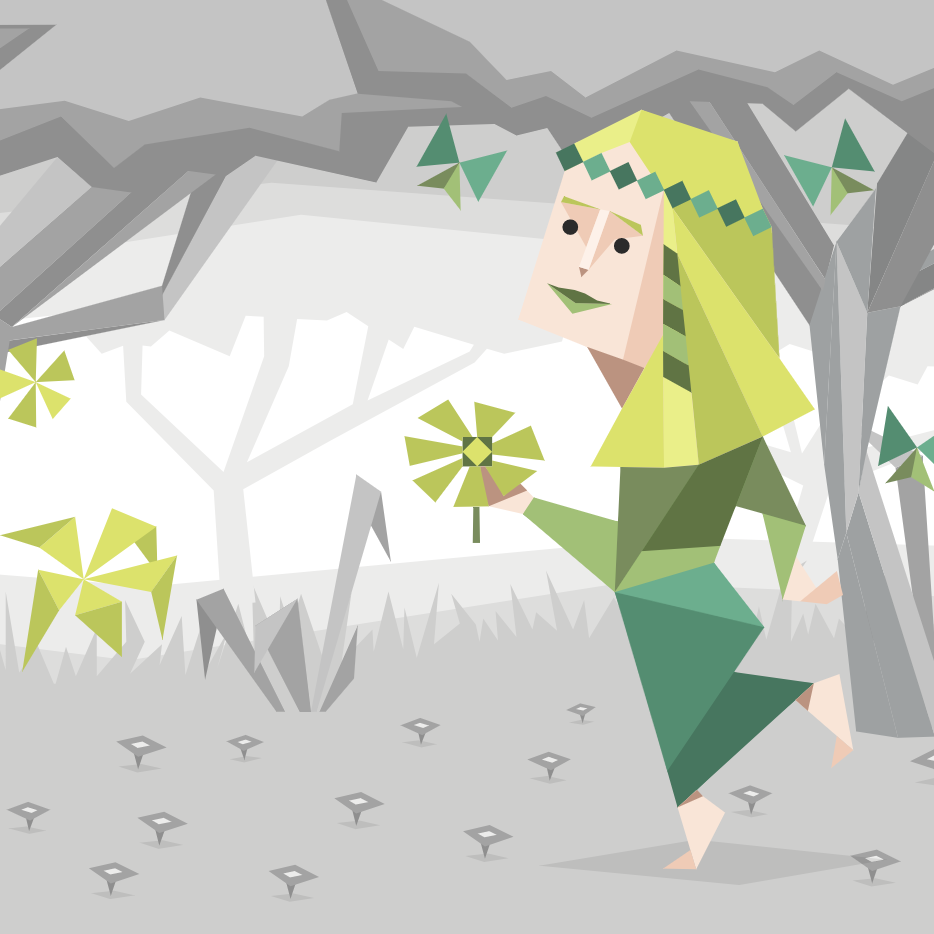

Hello World!
안녕하세요, (미래의) 프론트 엔드 개발자 정수영입니다.
수학이 싫어서 문과를 선택했던 제가 이런 이야기를 하는 것이 나도 믿기지는 않지만, 중학생 시절 호기심에 C++ 관련 서적을 구매했었습니다. 물론, 당시의 보잘 것 없던 끈기로는 앞장을 몇 번 넘겨보는 게 전부였지만 말이죠.
그럼에도 불구하고 긴 시간 동안 이따금씩 저의 평온한 일상을 흔들던 것은 개발자에 대한 동경이었습니다.
랩탑의 까만 화면 위로 펼쳐진 알록달록한 코드들과 현란하게 타이핑하는 손. 그것은 제가 생각하는 ‘가장 멋진 모습 베스트 5’ 안에 항상 들어가는 모습이었습니다.
‘그런 멋진 직업이 내 직업이 된다면?’이라는 작은 기대와 설렘으로 익숙지 않은 공부를 시작하게 되었습니다.

MBTI
INFP 열정적인 중재자입니다.
저는 최악의 상황이나 불편한 사람에게서도 되도록 좋은 면을 보려고 하며, 긍정적이고 더 나은 상황을 만들고자 노력하는 낙천주의자입니다. 어지간한 사건, 사고로는 잘 놀라지 않는 침착한 성격이며, 다소 낯을 가리는 탓에 처음에는 내성적으로 보일 수도 있습니다. 하지만, 겉으로 잘 드러나지 않을뿐, 한 번 제대로 불만 지피면 활활 타오를 수 있는 열정의 불꽃이 숨어있습니다.
자세히 알아보기
I LIKE IT
평소 책을 읽거나 넷플릭스를 보는 등의 INPUT적인 취미와 더불어 사진, 아트웍 등의 OUTPUT적인 취미를 함께 즐깁니다.
그리고, 작고 귀여운 고양이와 함께 살고 있습니다.
사진 보러가기